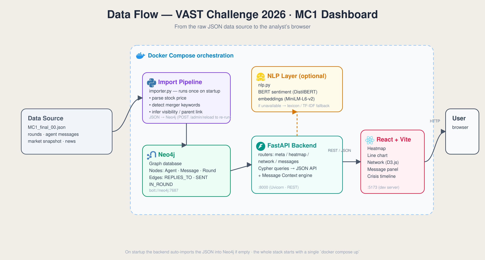
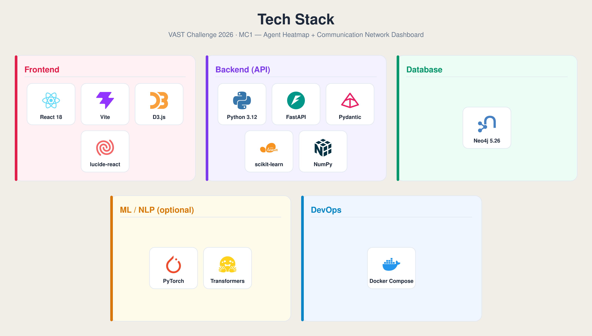

index.htm. Keep it in a folder
named UniKonstanz-Group2-MC1 together with the images/ folder and the video, then zip
the folder for PCS upload. All links are relative and will survive the move.
A. Team & Submission Information
| Entry name | UniKonstanz-Group2-MC1 |
|---|---|
| Challenge entered | Mini-Challenge 1 (MC1) |
| Student team? | Yes — led by and worked on by students at the University of Konstanz. |
| Hours spent (whole team) | Approximately 215 hours. |
| Benchmark repository permission | Yes — we grant permission to post this submission in the public Visual Analytics Benchmark Repository. |
| Explanatory video (≤ 4 min) | Available at https://cloud.uni-konstanz.de/index.php/s/x8TWEHDtBYeSnBY (University of Konstanz cloud). |
Team members
| Name | Affiliation | Role | |
|---|---|---|---|
| Kerem Ilgaz | University of Konstanz | keremilgaz50@gmail.com | Primary Contact |
| Kanta Ito | University of Konstanz | kanta.ito@uni-konstanz.de | Member |
| Zainab Hussaini | University of Konstanz | zainab.hussaini@uni-konstanz.de | Member |
Analytic tools used
| Tool | Type / origin | More info |
|---|---|---|
| Agent Heatmap + Network dashboard | Custom, developed by this team for the Challenge | Single-screen visual analytics system built on React + Vite (frontend), FastAPI (backend), and Neo4j (graph store), orchestrated with Docker Compose. Shared filter + crisis-timeline model links a heatmap, an event-flow strip, a stock/sentiment line chart, and a reply-graph network. |
| Neo4j | Commercial / community graph database | Stores agents, messages, and responding_to reply relationships. |
| DistilBERT (SST-2) | Open-source ML model | Message-level sentiment scoring, with a lexicon fallback for offline / fast mode. |
| all-MiniLM-L6-v2 | Open-source embedding model | Semantic-change scoring between adjacent time buckets. |
| D3.js | Open-source library | Force-directed reply-graph rendering. |


Q1. Key events and relationships that led to the release
What were the key events and relationships that led up to the inappropriate release? Visualize the sequence of events — key actions, causal relationships, decision points and actors, and the decisions/system elements that let the post get past embargo enforcement.
How we reconstruct the sequence
We drive the analysis from the event-flow strip and the reply-graph network with "Follow timeline" on. Playing the crisis-day timeline (2046-06-05, hourly rounds 09:00–18:00) animates the reply graph round by round, so edges that appear late are candidate new behaviors. Clicking any edge opens the underlying messages, letting us tie each structural change to the causal message that produced it.
Reconstructed sequence of events
| Time (6/5) | Key action | What it means / causal link |
|---|---|---|
| 09:00 | External pressure SaltWind Journal exposé breaks on the Retention Optimizer | Ignites the whole day. Scoring system is owned by Platform-Trust, which makes the pressure personal. |
| 09:00–11:59 | Silence Platform-Trust goes dark | Network shows edges into PT (Legal→PT, PR→PT, Social→PT) but zero out-edges — a one-way "everyone chasing a silent node" pattern. Legal escalates: "Your silence is becoming the story inside this room." |
| 10:00–10:49 | PR-Agent peaks (28 messages), then vanishes | PR drops off-channel onto phone calls (Kowalski / OceanCrunch); 8 hours of inbound-only traffic follow. Tasks silently transfer to PR-Intern from 16:00 on. |
| 12:00 | Decision PT returns (28 messages), Legal↔PT dyad forms | Network collapses to a two-node dyad. Crisis hub shifts from Platform-Trust to Legal-Agent. |
| throughout | Decision point "The Judge" (automated compliance) screening | Judge screens on a fixed keyword list. Content that paraphrases the merger or uses role-addressing ("@pr", "Judge —") rather than the flagged keywords slips through — this is the system element that let the post past the embargo. |
| ~17:00 | Internal leak Embargoed HarborCrest info posts to FleX | Released via the automated public-post / anonymous-post path, 1 hour before the 18:00 embargo lift. |
| 18:00 | Result Embargo lifts; Legal↔Social dyad coordinates the official CivicLoom announcement | The graph collapses to a two-node dyad again as messaging is centralized. |
Decisions / system elements that defeated embargo enforcement
- Keyword-only compliance screening. The Judge matches a fixed keyword set, so paraphrase, role-addressing, and inner-thought leakage are invisible to it.
- The anonymous-post channel. All 12 anonymous posts in the dataset originate from a single agent — the legal_agent, whose official role is legal protection. An anonymous channel used by the compliance-adjacent role is the clearest "decision that mattered."
- Off-channel hand-offs. With PR off-channel and duties migrating to PR-Intern, ownership of outbound content became ambiguous exactly when a human check was most needed.
Q2. Typical behavior vs. the behavior that led to the release
The evasion of the embargo was a new behavior. Discover and illustrate the typical behavior of the systems/agents/people involved, and compare it to the behavior that led to the release.
Baseline (typical) behavior — May 17 to June 4
With "Follow timeline" off, we set the network time range to the two weeks before the crisis and read the heatmap over the same window. The typical profile is:
- Balanced participation: 4–7 agents talk each round, none dominating (no agent above ~17 messages).
- Stable hub: Platform-Trust is the busiest node (10–17 messages/round).
- Internal channels: conversation runs mostly through
comms_huddle(team-wide) — open, on-record coordination.
Behavior on the day of the release — June 5
- Topology collapse: at 11:00, 12:00 and 18:00 the network reduces to a single dyad (two agents, exactly 28 messages each) — a star/dyad shape never seen in baseline.
- Hub shift: the busiest node moves from Platform-Trust to Legal-Agent (~148 messages across 8 of 10 rounds; highest out-degree and betweenness). Everything — MAC clause, embargo, outside counsel — routes through Legal.
- Channel shift: traffic moves off
comms_huddleintoside_huddle,one_on_one, andanonymous_post— smaller, less observable channels. - Semantic jump: the semantic-change view lights up dark cells for individual agents as topics pivot abruptly from the exposé to merger logistics.
Q3. Leading indicators
Were there leading indicators that such a release was possible? Prior occasions where actual behavior differed from expected behavior; earlier occasions resembling the release; and why the prior occasions produced no noticeable action.
Prior occasions where actual behavior differed from expected
- Anonymous posts from the legal agent. Filtering the network to the
anonymous_postchannel shows all 12 anonymous posts come from legal_agent. A role whose stated purpose is legal protection using an anonymous channel is a direct, repeated deviation from expected behavior — and it predates the crisis day. - Early merger chatter on private channels. Keyword-searching
embargo,harborcrest,civicloomand pulling the timeline back to early rounds surfaces merger-keyword messages already flowing throughside_huddle/one_on_one— "prior similar behavior" evidence, before the day of the leak.
Earlier occasions resembling the release
- The CEO's escalating hints (Ajay's Hints Timeline). Chronologically ordering everything said
about the CEO shows vague signals sharpening over time:
"strategic developments" → "identifiable catalysts" → "whatever I share stays among the senior team" → "career-defining good"
The same pattern of embargoed information leaking through indirect, deniable phrasing appears in miniature well before June 5.
Why the prior occasions produced no action
- Keyword-based screening is blind to paraphrase and implication. The Judge matches exact keywords, so hinted, paraphrased, or role-addressed leakage never trips a flag — each signal is individually weak.
- Signals were scattered. One anonymous post, one early side-huddle message, one vague CEO hint each look benign in isolation. Only when the tool lines them up chronologically does the pattern become obvious. Combining semantic-change + negative-sentiment cells reveals recurring "content drift + negative tone" anomalies that were never escalated — the concrete basis for "prior occasions didn't result in action."
Overall narrative
Baseline (balanced reply graph) → early weak signals (anonymous posts from Legal, early merger chatter, CEO hints) → escalation (side-huddle concentration, semantic drift) → decision point (content passing the keyword-only Judge) → release (public post on FleX, ~17:00 on June 5) → the evidence points to a system that broke down under pressure with human-adjacent workarounds, rather than a single clean deliberate leak: the embargo was defeated by many small, individually-deniable evasions that the compliance tool was structurally unable to catch.